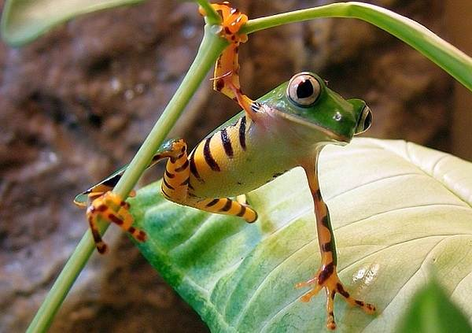
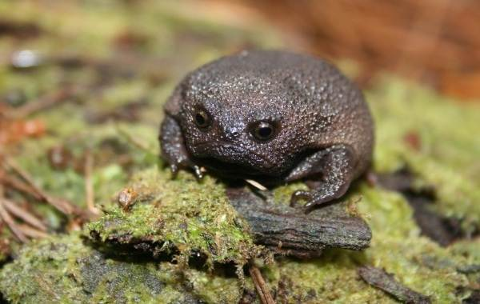
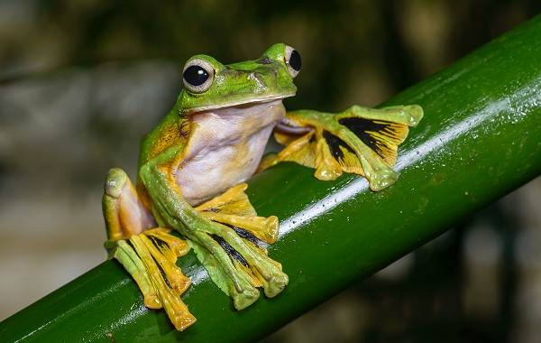

| Двухцветная филломедуза |
Второе название этого вида – обезьянья лягушка. Такое прозвище этот он получил
из-за
своего
чрезмерного любопытства. Двухцветная филломедуза – крупный представитель ядовитых земноводных. Передняя
часть особи
имеет неоновую желтую окраску, а задняя – фиолетово-синюю.
По всей коже животного проходят широкие черные полосы. Доказано, что яд двухцветной филломедузы может
вызвать у человека галлюцинации. Но для этого нужно получить большое количество вредного вещества. Чаще,
токсин, выделяемый железами данного земноводного провоцирует желудочную дисфункцию. В любом случае, для
человека он не смертелен.
|

|
| Черная дождевая лягушка |
Это земноводное походит на жителя другой планеты. Оно огромно, бугристо и
устрашающе.
Однако, некоторые
называют его «грустной лягушкой». Всё дело в опущенных вниз уголках широко рта особи. Из-за этого
складывается визуальное впечатление, словно она расстроена. Образ опечаленного земноводного дополняют
крупные черные глаза.
|

|
| Веслоногая лягушка |
Отличие вида в его широких межпальцевых перепонках на всех лапках. Благодаря им,
конечность особи напоминает весло. Отсюда и название. Такая необычная форма лапок позволяет веслоногой
лягушке высоко прыгать, более, чем на 50 см. Средний размер тела особи – 11 см. У таких земноводных
очень
стройное тело, крупные глаза, зрачки на которых расположены горизонтальным образом.
|

|